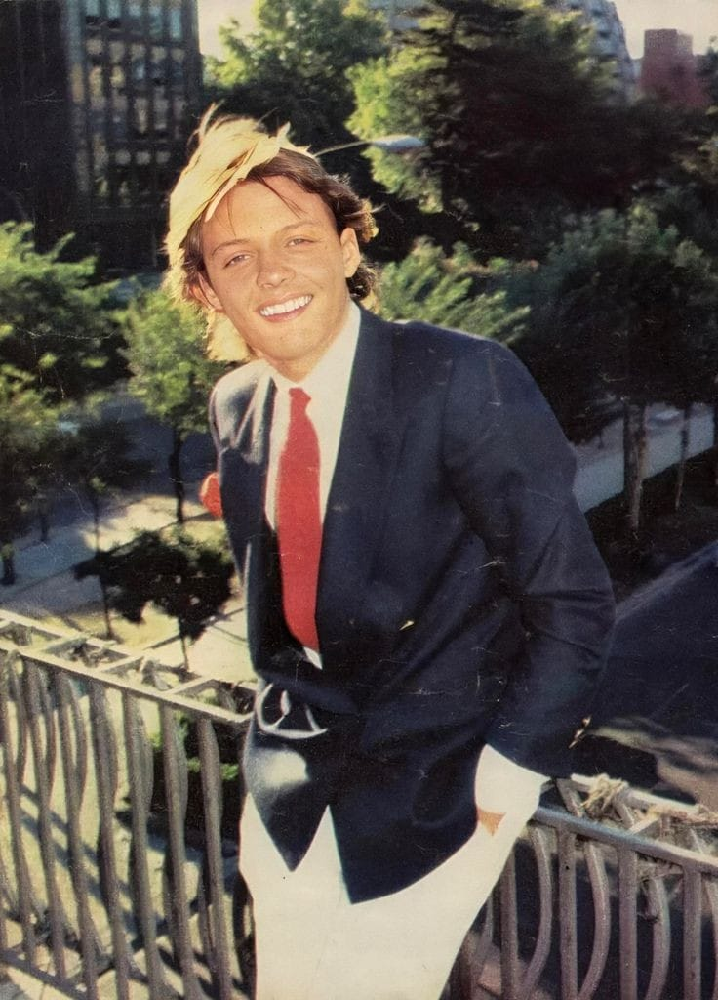

Luis Miguel es padre de tres hijos: Michelle (13 de junio de 1989), nacida de su relación con Stephanie Salas, hija de la actriz Sylvia Pasquel, y a su vez, nieta de la actriz Silvia Pinal. Miguel (1 de enero de 2007) y Daniel (18 de diciembre de 2008), nacidos de su relación con la actriz Aracely Arámbula. Accidente de aviación El sábado 18 de noviembre de 1995, el avión en el que el cantante Luis Miguel llegaba a Guadalajara tuvo fallos y el tren de aterrizaje nunca descendió, por lo que el capitán decidió aterrizarlo de urgencia. Se preparó todo en el Aeropuerto Internacional Libertador Miguel Hidalgo de Guadalajara, se puso espuma en la pista y la aeronave aterrizó "de panza", se salió de la pista, chocó contra la malla ciclónica del perímetro aeroportuario y cayó sobre un costado. Horas más tarde, en el escenario instalado en el Estadio 3 de Marzo, "El Sol", a sus 25 años de edad, declaró que ese día "había vuelto a nacer".